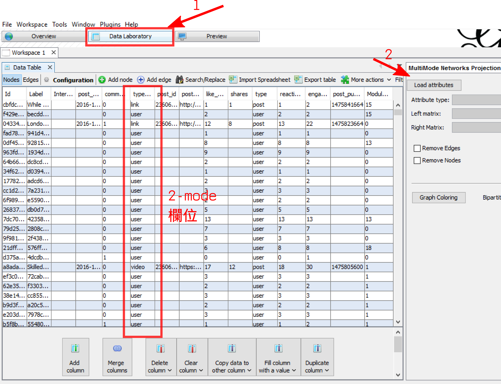
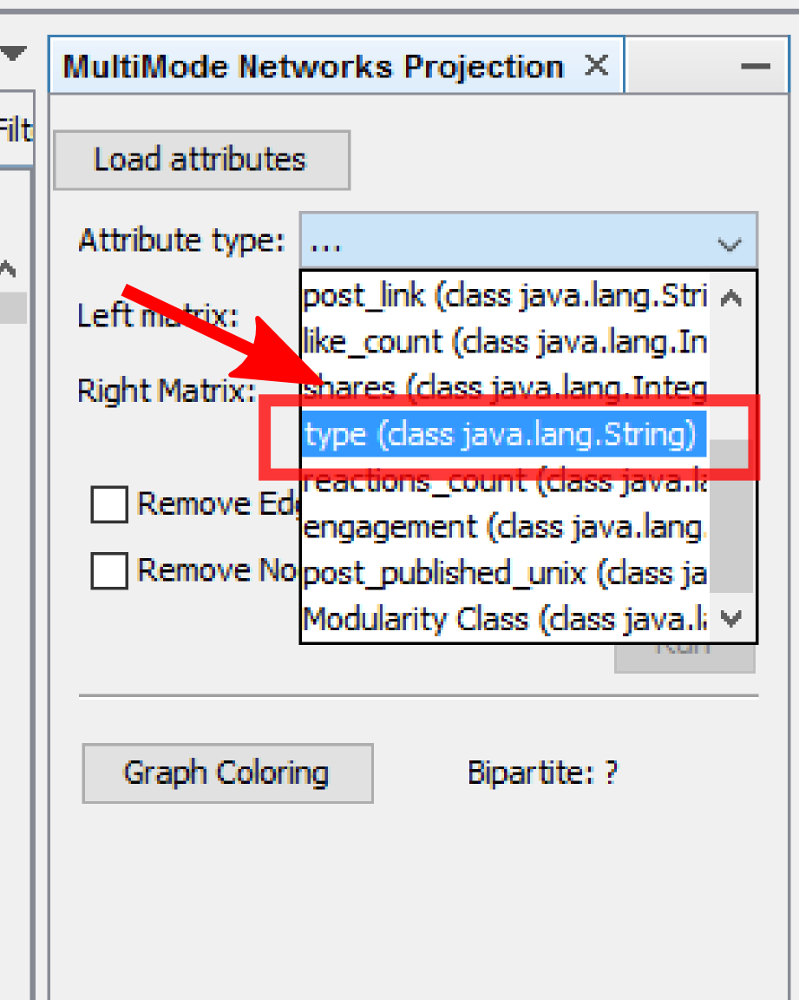
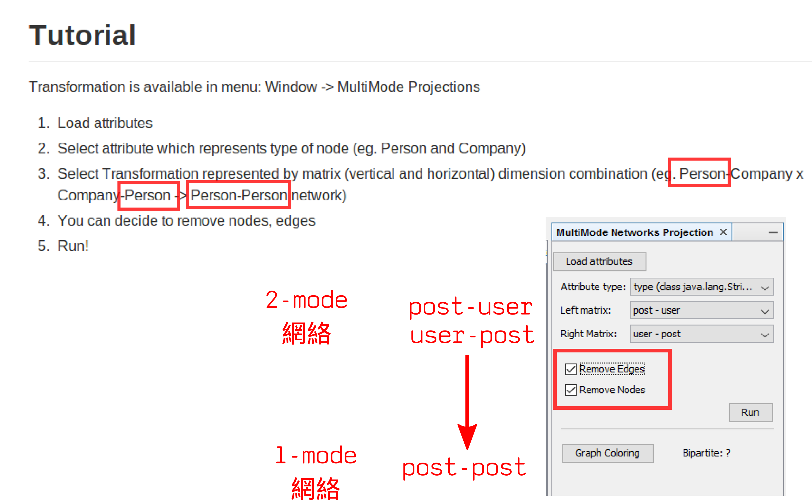
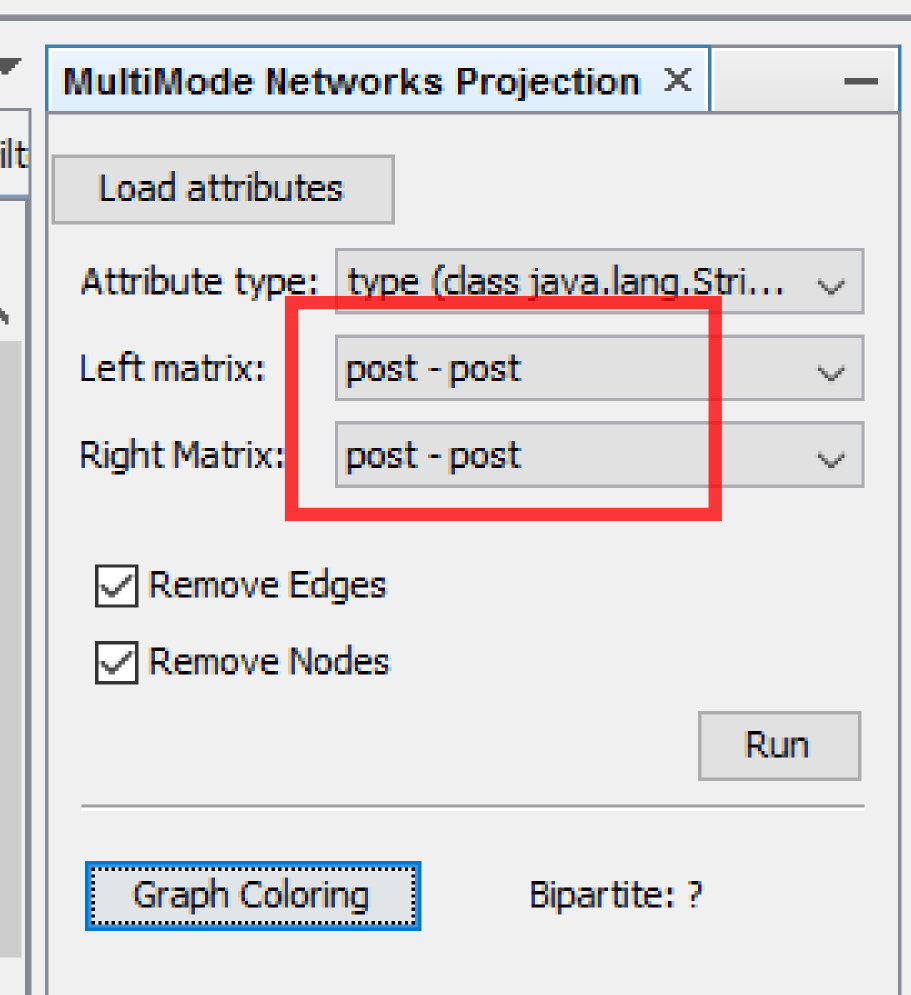
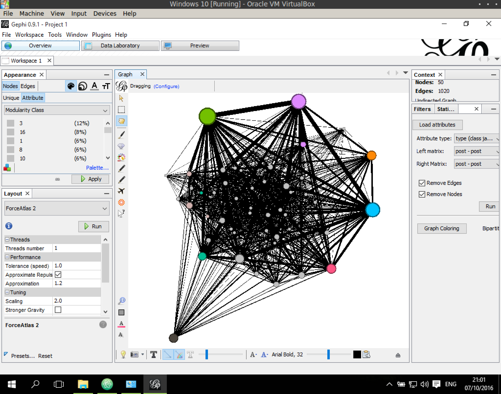
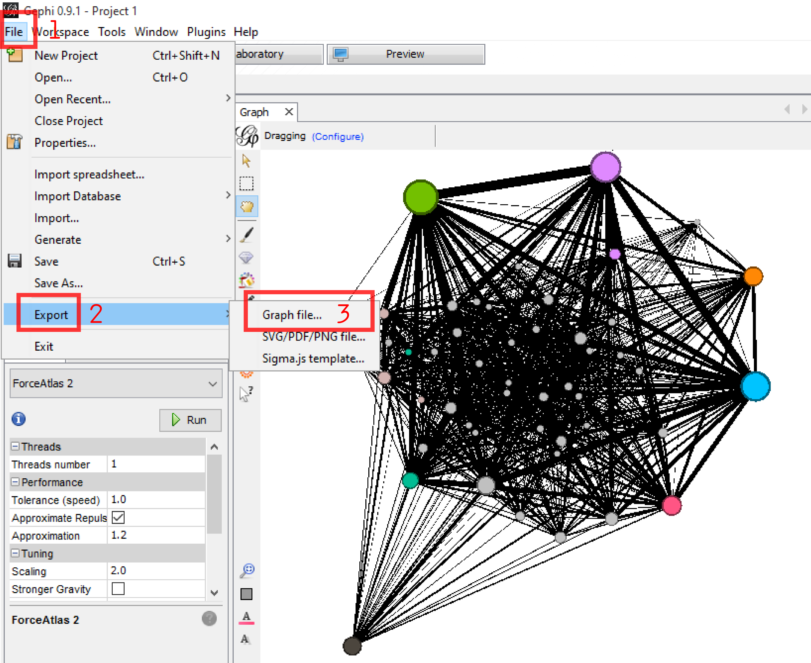
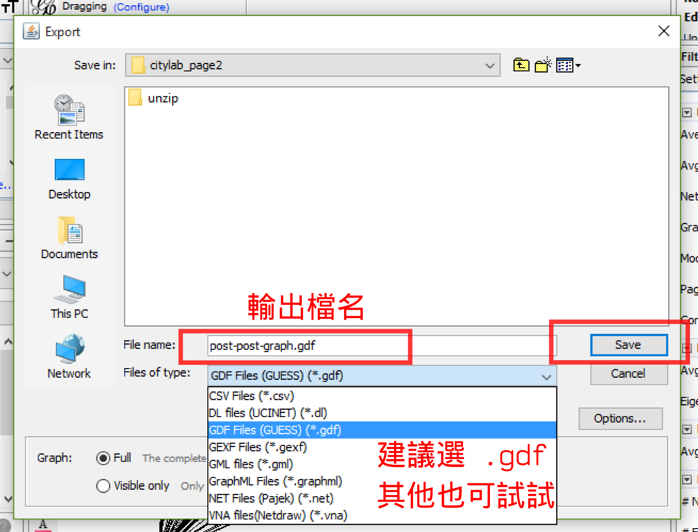

將 2-mode 網絡轉成 1-mode 網路
這部分將說明如何將 2-mode 轉換成 1-mode
到 Data Laboratory 頁面，觀察到資料有一個欄位是 type，即前面畫圖曾用過的資料，記錄每一個節點是 post 或是 user。在右邊的 MultiMode Networks Projection 工具欄中，點 Load attributes，讓下方的下拉選單有欄位可選 
選取 type 欄位

從 github 網頁可以看到，若要產生 post-post 的共同被關注網路，則在 Left matrix 選擇 post-user，在 Right matrix 選擇 user-post。下方的 刪除節點與連線選項請打勾，這選項是讓 gephi 在轉換完成之後，刪掉多餘的節點、連線(也就是 user 節點及相關連線)

若是要產生 user-user 網路，則可以反過來選 left: user-post, right: post-user
按一下 Run 之後，可以發現 Left/Right matrix 都是 post-post。因爲 user 已經被移除了。

轉換完成的網絡，只剩下 post 之間的共同被關注網絡。

請記得！ 在轉換完成後，第一件事是儲存這個網絡。這是因爲 Multimode networks projection 工具在轉換後很吃記憶體空間，轉換完成後也無法有效的釋放出空間，所以在這之後的分析操作都會有問題。
File --> Export --> Graph file...

建議選擇 .gdf 檔，這檔案與 netvizz 輸出的檔案格式一樣，其他如 graphml, gml 等也都可以試試看，不過各有一些侷限性。
